カードを開くと、実際の大きさで確認できます。スマホでも開けます。
メインビジュアルは決定案と同じです。2画面目以降（お知らせ・メニュー・紹介・アクセス）の組み方・地の色・文字組みを変えています。画像は2画面目です。
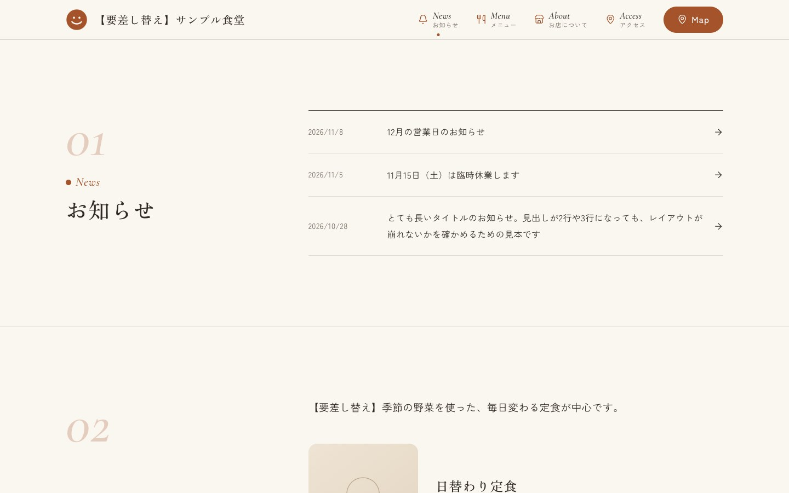
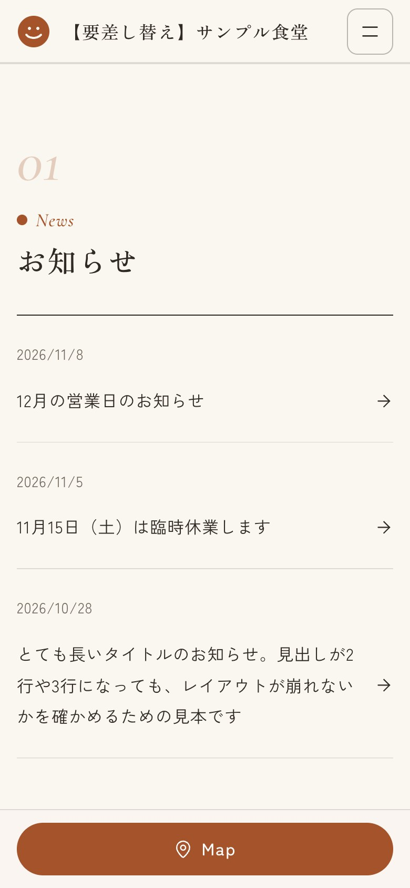
左に見出し＋右に内容（雑誌のような2段組み）
広い余白と細い罫線で組み、各セクションに01〜04の大きな番号。写真は控えめに置き、文字を読ませる落ち着いた案。
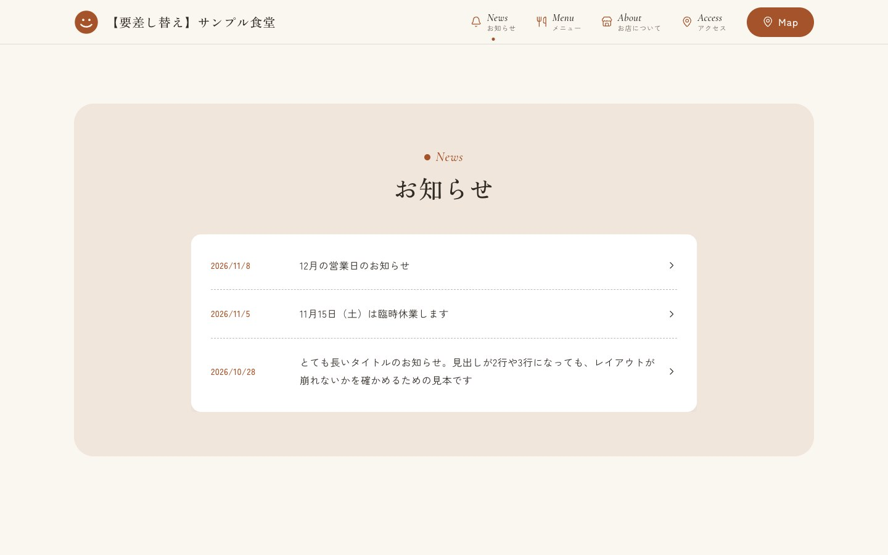
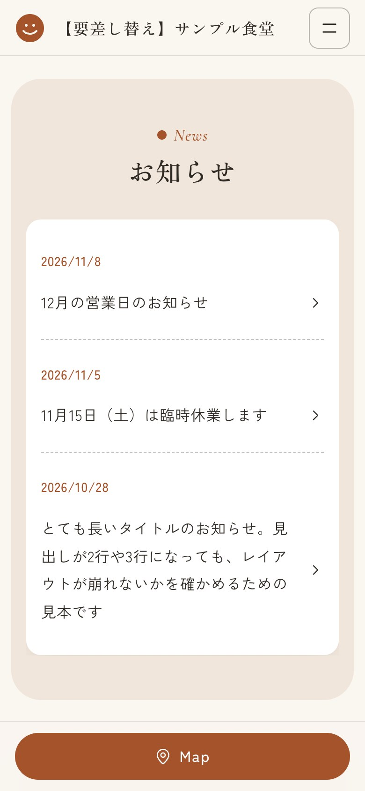
色の面＋白いカード
セクションごとに淡い色の面を敷き、情報は角の丸い白いカードにのせる。メニューは3枚のカード、アクセスは地図ボタンつきの大きなカード。明るく親しみやすい案。
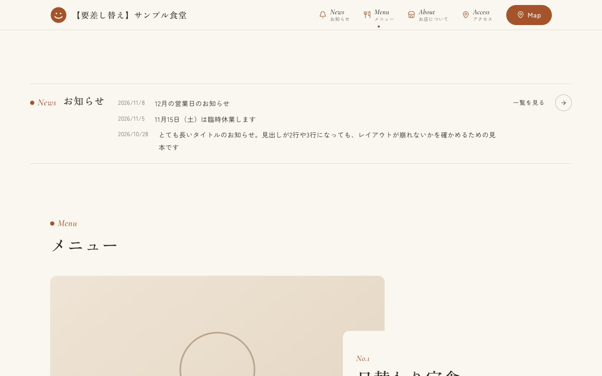
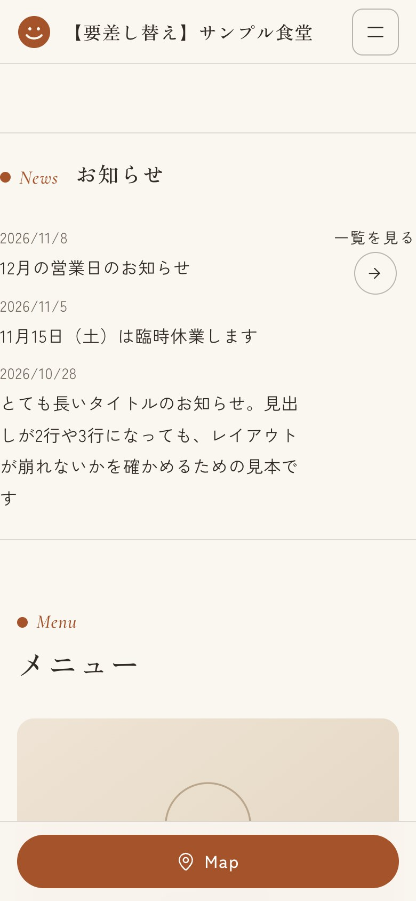
画面幅の写真＋重なる文字のカード
メニューと紹介を、画面幅いっぱいの写真で見せる。文字は写真に少し重なる白いカードに。写真が主役の、雑誌の特集ページのような案。
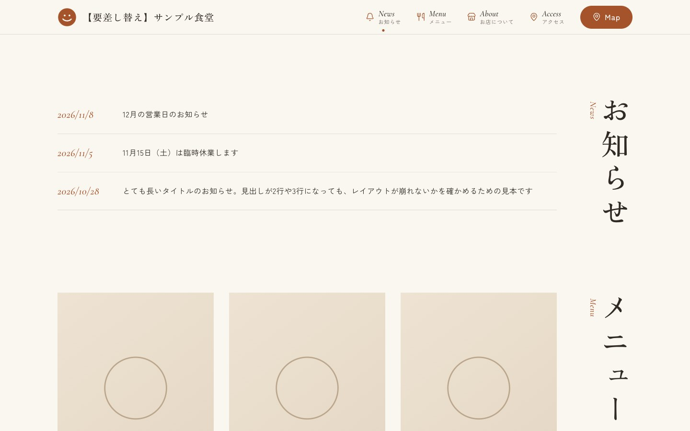
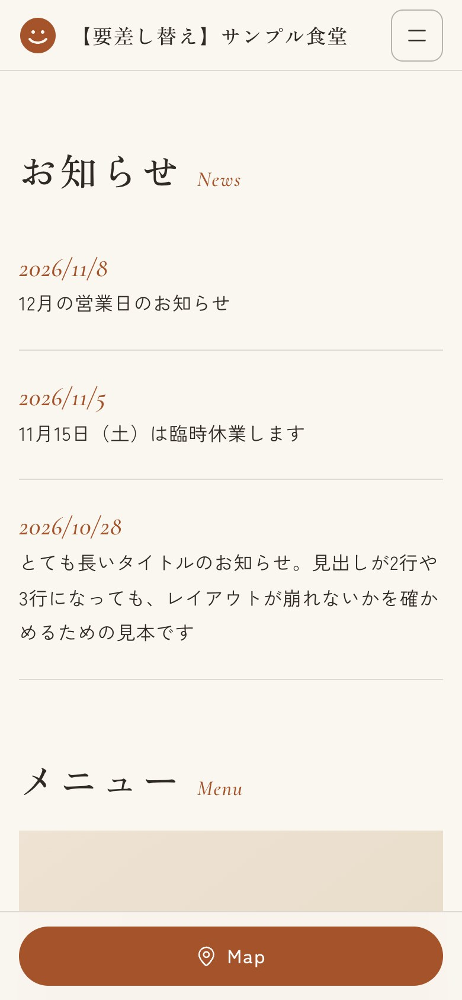
右端に縦書きの見出し＋大きな文字
各セクションの右端に縦書きの大きな見出しを置き、営業時間は大きな数字で見せる。紹介だけ濃い色の帯にして、ページに強弱をつける。いちばん大胆な案。
最初の1画面の案です。構図・色・書体・モチーフを変えています。
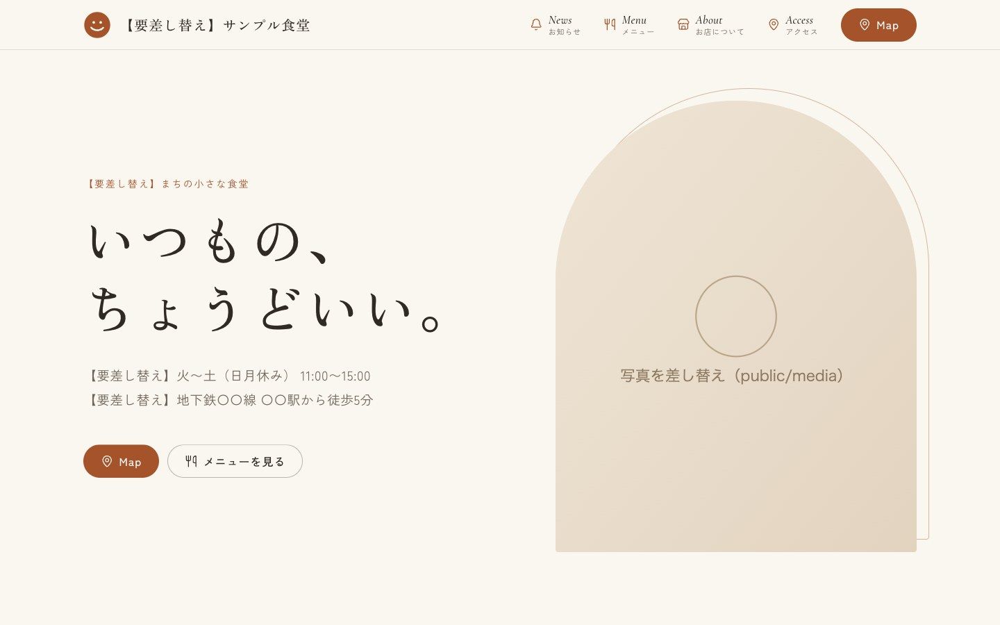
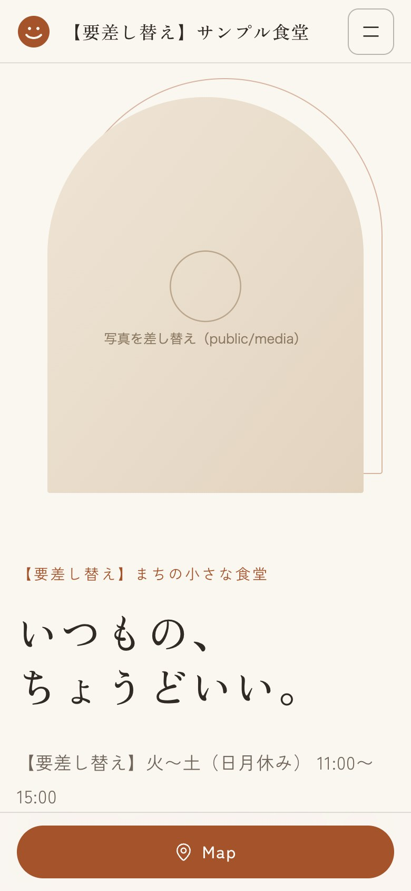
左に文字＋右に写真
写真をアーチの窓に入れ、左に大きな見出しと営業時間。落ち着いた明朝で、お店の空気をそのまま見せる案。
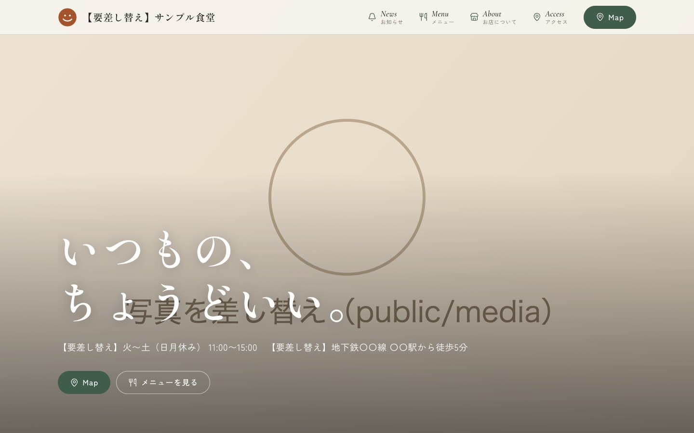
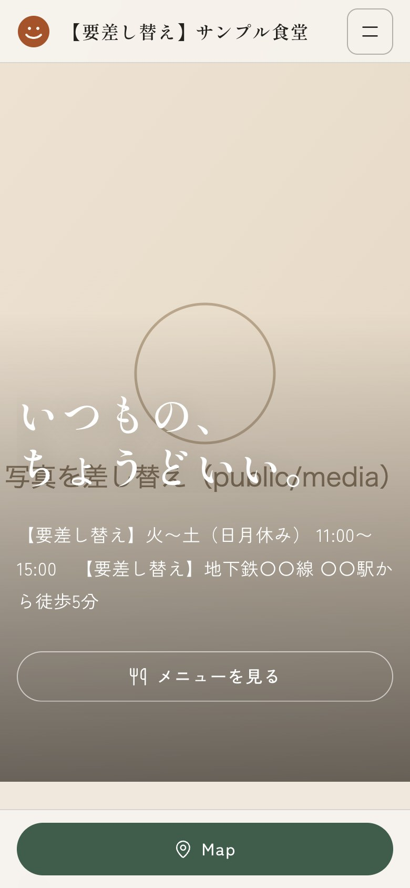
写真を全面に＋左下に文字
店内や料理の写真を画面いっぱいに見せ、左下に白い見出し。写真の力でいちばん印象に残る案。良い写真があるお店向け。
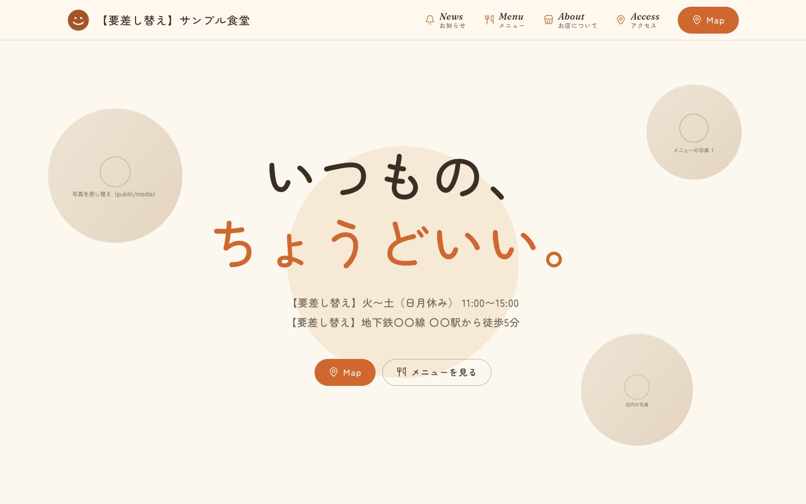
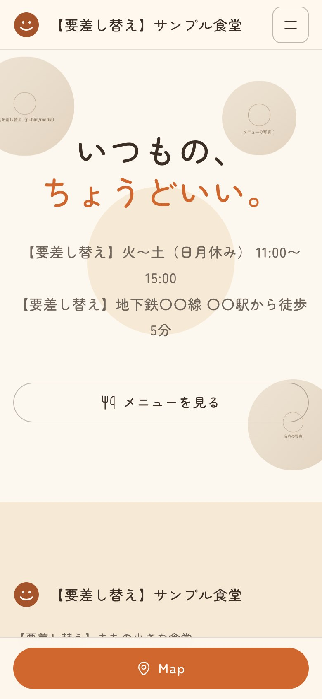
中央ぞろえ＋丸い写真
大きな丸ゴシックの見出しを真ん中に置き、まわりに丸く切り抜いた写真がゆっくり浮かぶ。やわらかく、親しみやすい案。
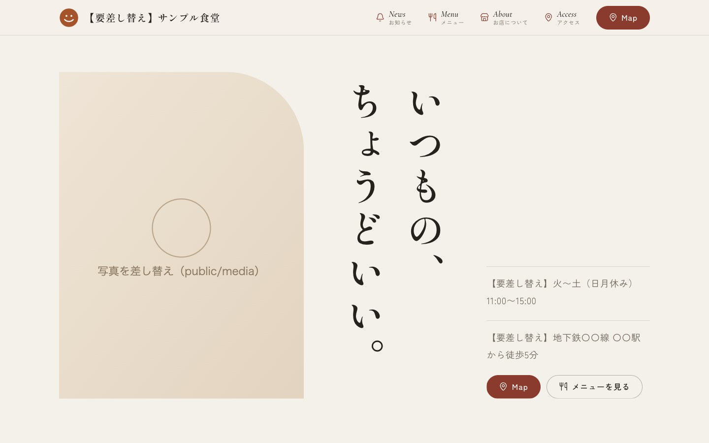
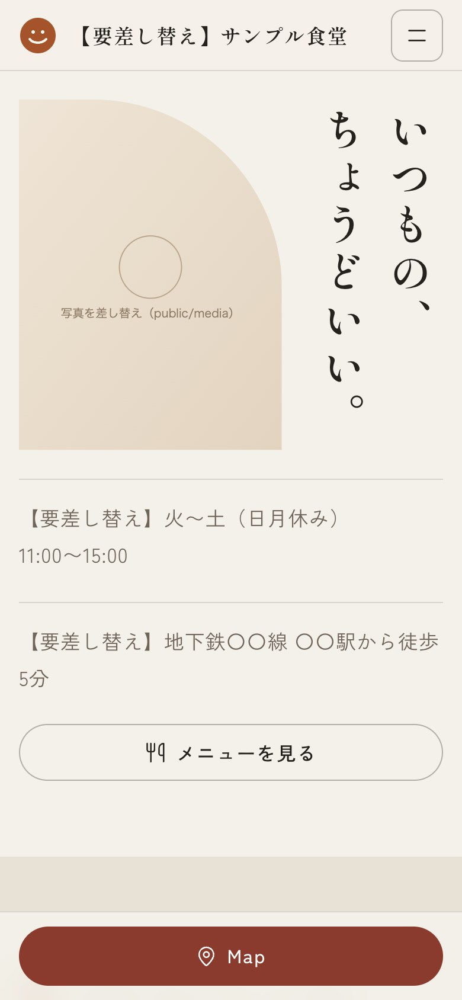
左に写真＋右に縦書き
縦書きの大きな見出しと、縦長の写真。和の落ち着きと余白で見せる、いちばん日本語らしい案。